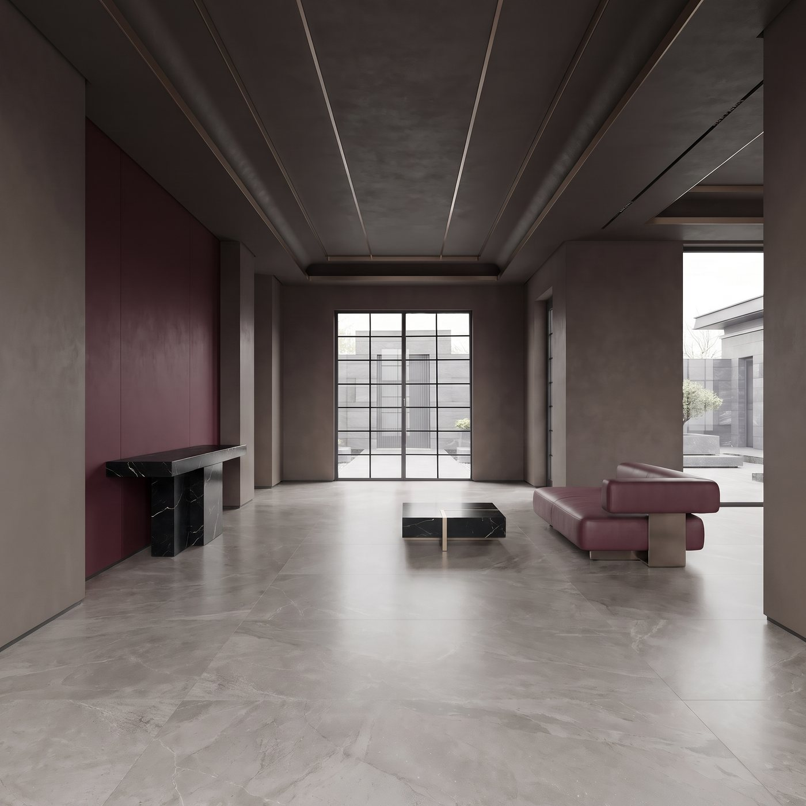
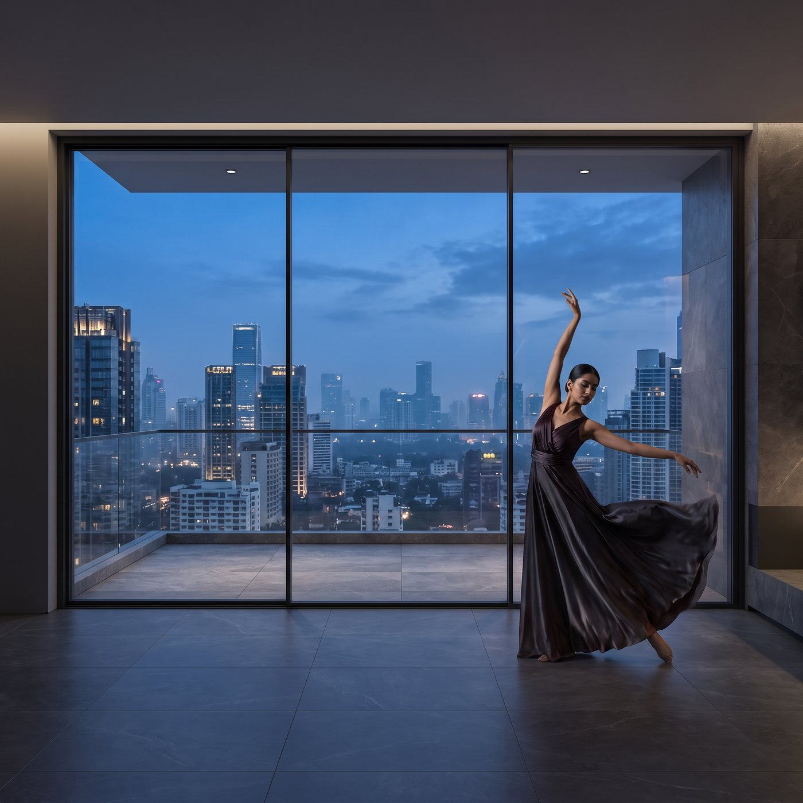
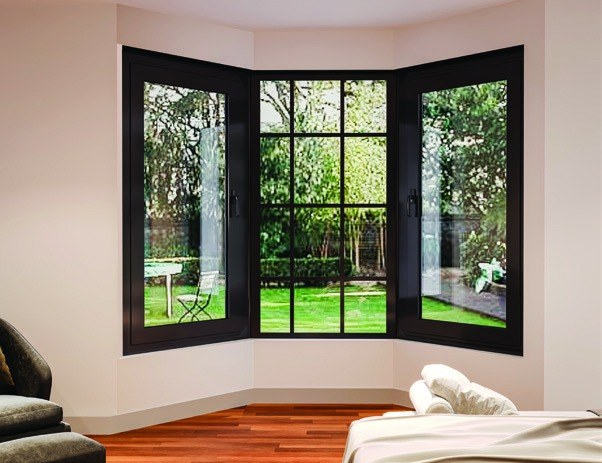
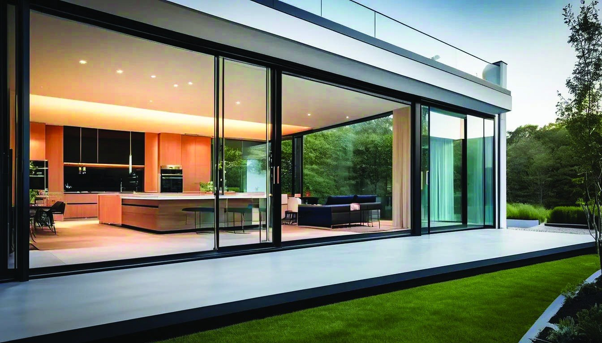
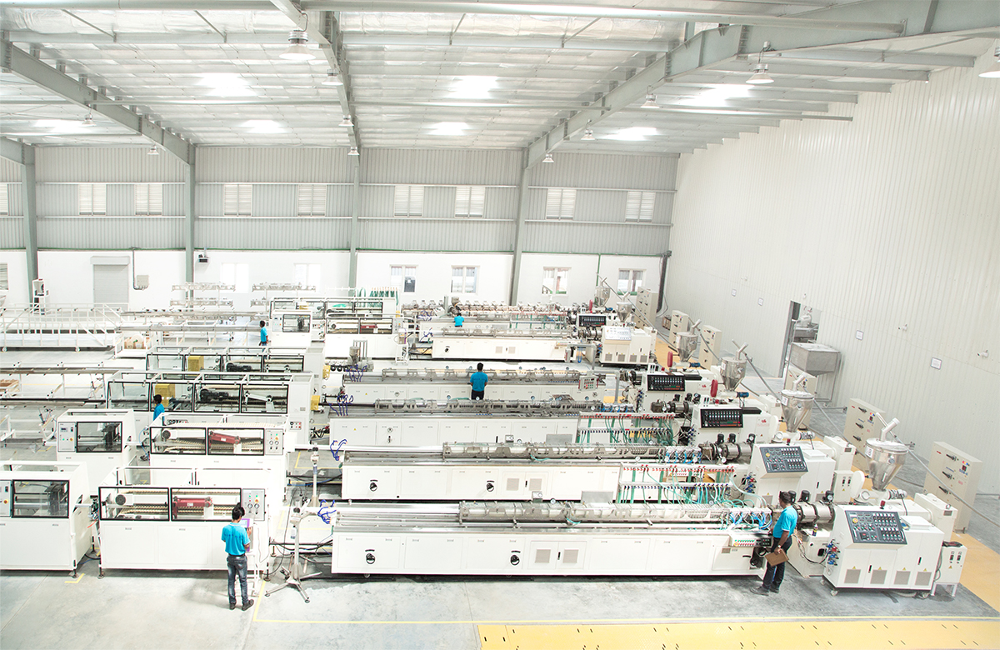

Slim profiles
Narrow frames mean more glass and less metal, so rooms are brighter and views feel uninterrupted.
Cleaner sightlines

Aluminium windows & doors
Prominance aluminium windows and doors use slim 6063-T6 profiles to open up more glass, more light and more freedom for your architecture — with a sleek finish and a 25-year warranty against surface corrosion.
 Scroll
Scroll
The short answer
Aluminium windows and doors use frames extruded from aluminium alloy — strong enough to be drawn slim, so glass areas grow and sightlines stay clean.
That strength is why aluminium is the choice for large sliding doors, balcony glazing and contemporary façades. Prominance uses 6063-T6 aluminium, finishes it to a sleek, premium standard and backs the surface with a 25-year warranty against corrosion.
Annual production capacity at our Coimbatore plant
Manufacturing since — over a decade of extrusion experience
Cities served across 28 states in India
Hours of weather-ability testing on our profiles
Why aluminium
Where the view matters most, aluminium lets the glass do the talking — and the frame disappear.
Narrow frames mean more glass and less metal, so rooms are brighter and views feel uninterrupted.
Strength lets panels grow tall and wide — ideal for sliding doors onto balconies, patios and gardens.
Strong 6063-T6 extrusions keep large panels rigid, true and secure year after year.
Our aluminium systems carry a 25-year warranty against surface corrosion.
A refined surface finish gives every frame a crisp, architectural look that stays that way.
Aluminium can be recycled again and again without losing its properties.
The range
Slim systems for entrances, living spaces and large glass walls — each made to order for your openings.

EntranceSlim frames that open a hall to the light.

City viewsFloor-to-ceiling glass that frames the skyline.
 Living
LivingClean sightlines for bright, open living rooms.

SlidersWide sliding doors that bring the horizon indoors.
 Garden
GardenBig openings that connect rooms to the garden.

CourtyardSeamless glass walls for calm, private courtyards.
Specifications
The figures below describe the Prominance aluminium range. Exact performance depends on the configuration, glass and installation you choose.
| Feature | Prominance aluminium |
|---|---|
| Material | 6063-T6 aluminium alloy |
| Profiles | Slim profiles for larger glass and clean sightlines |
| Finish | Sleek, premium surface finishes |
| Warranty | 25 years against surface corrosion |
| Glazing | Single, double and laminated glass options |
| Configurations | Sliding doors, sliding and fixed windows — ask about others |
| Made in | Coimbatore, Tamil Nadu, India |
| Availability | 28 states · 860+ cities across India |
Specifications are indicative. Our team will confirm the exact specification for your project in your written quote.
Inside the factory
Prominance profiles are blended, extruded and tested in-house at our Coimbatore plant — the same standards behind every window we fit.

Rows of European-technology extruders, one standard.
Coimbatore, Tamil Nadu · 22,000 MT a year01
PLC- and SCADA-controlled batching ensures accurate weighing, mixing and temperature control for a consistent blend.
02
In-house die design and specialist maintenance keep high-grade steel tooling production-ready and dimensions precise.
03
Imported extruders, advanced calibration and purified chilled water deliver consistent profiles with accurate dimensions.
04
European and Japanese lab equipment supports EN 12608 testing, backed by in-house R&D, 3D printing and prototyping.
Compare
Not sure which frame material is right? Here is an honest side-by-side for Indian homes.
| Feature | Aluminium (Prominance) | uPVC (Prominance) | Timber |
|---|---|---|---|
| Look | Slim sightlines, sleek premium finishes | Clean, solid; white and wood-finish options | Classic, natural grain |
| Large glass spans | Excellent | Good | Limited |
| Maintenance | Low — wipe clean | Wipe clean — no painting | Regular polishing or painting |
| Heat & noise | Depends on glass and thermal design | Multi-chambers insulate; up to 40 dB reduction | Good, but varies with fit and seals |
| Monsoon & coastal | No rust; corrosion-protected, 25-year surface warranty | No rust, rot or swelling | Can swell, warp or attract termites |
| Best for | Large glass walls, balconies, contemporary design | Bedrooms, living rooms, noisy roads, family homes | Heritage and decorative projects |
Comparison reflects typical performance. See our uPVC range or help me choose.
How it works
One team looks after everything, so you deal with one partner from the first conversation to the last screw.
Tell us about your home, views and budget. We help you compare systems and choose what fits.
Accurate site measurements mean every frame is made to your exact openings.
Your windows are fabricated from profiles built to Prominance standards in Coimbatore.
Our team fits them, then stays on call with after-sales service and a dedicated helpline.
Answers
An aluminium window uses a frame extruded from aluminium alloy — Prominance uses 6063-T6 — which is strong enough to be drawn very slim. That means more glass, cleaner sightlines and the freedom to build large sliding doors and wide openings, with a sleek premium finish.
Neither is better everywhere. Aluminium wins on slim frames, big glass spans and an architectural look. uPVC wins on heat and noise insulation and needs the least maintenance. Many homes use aluminium for living-room and balcony glazing and uPVC for bedrooms. See our comparison above.
6063 is a magnesium-silicon alloy widely used for architectural extrusions because it is strong, smooth and takes a fine finish. T6 is a heat-treated temper that adds strength. It is the alloy Prominance uses for its aluminium window and door systems.
Yes — our aluminium systems carry a 25-year warranty against surface corrosion. Ask our team for the full terms and coverage for your project when you request a quote.
Aluminium does not rust like steel. It forms a thin natural oxide layer, and the finish adds further protection. Prominance backs the surface with a 25-year warranty against corrosion.
Aluminium conducts heat more readily than uPVC, so performance depends on the glass and the frame design — for example double glazing and thermal separation. Tell us the orientation of the room and our team will recommend a specification.
Noise reduction depends mostly on the glass and seals rather than the frame alone. Slim aluminium frames can be paired with laminated or double glazing to cut street noise. We will suggest the right combination for your location.
Yes — this is where aluminium shines. Its strength lets frames stay slim while panels grow large, so you can open a living room fully onto a balcony, patio or garden.
Across India — we serve 28 states and 860+ cities, and our own team handles measurement, manufacture and installation.
Keep exploring
Let’s build something better
Planning aluminium windows or sliding doors? Our team will help you choose the right systems, glazing and finishes for your space.